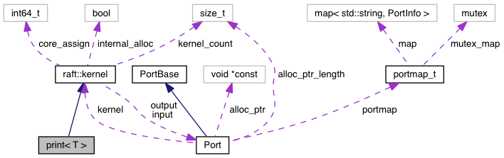
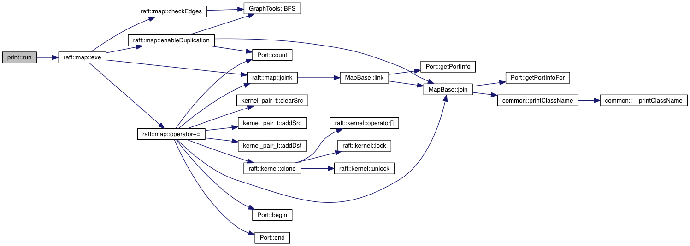

Inheritance diagram for print< T >:

Collaboration diagram for print< T >:

Public Member Functions | |
| virtual raft::kstatus | run () |
 Public Member Functions inherited from raft::kernel Public Member Functions inherited from raft::kernel | |
| kernel () | |
| kernel (void *const ptr, const std::size_t nbytes) | |
| virtual raft::kernel * | clone () |
| std::size_t | get_id () |
| raft::kernel & | operator[] (const std::string &&portname) |
| core_id_t | getCoreAssignment () noexcept |
Additional Inherited Members | |
| Static Public Member Functions inherited from raft::kernel | |
| template<class T , class ... Args> | |
| static kernel_wrapper | make (Args &&... params) |
| Protected Member Functions inherited from raft::kernel | |
| virtual std::size_t | addPort () |
| virtual void | lock () |
| virtual void | unlock () |
| std::string | getEnabledPort () |
| void | retire () noexcept |
| bool | isRetired () noexcept |
| void | setCore (const core_id_t id) noexcept |
| Protected Attributes inherited from raft::kernel | |
| Port | input = { this } |
| Port | output = { this } |
| bool | internal_alloc = false |
| core_id_t | core_assign = -1 |
| Static Protected Attributes inherited from raft::kernel | |
| static std::size_t | kernel_count |
Detailed Description
template<typename T>
class print< T >
Definition at line 11 of file peekrange.cpp.
Member Function Documentation
§ run()
template<typename T>
|
inlinevirtual |
run - function to be extended for the actual execution. Code can be executed outside of the run function, i.e., with any function call, however the scheduler will only call the run function so it must initiate any follow-on behavior desired by the user.
nothing bad, just no more data
nothing bad, just no more data
Implements raft::kernel.
Definition at line 19 of file peekrange.cpp.
References raft::map::exe(), and raft::kernel::input.
Definition: portexception.hpp:63
Definition: portexception.hpp:69
Here is the call graph for this function:

The documentation for this class was generated from the following file: